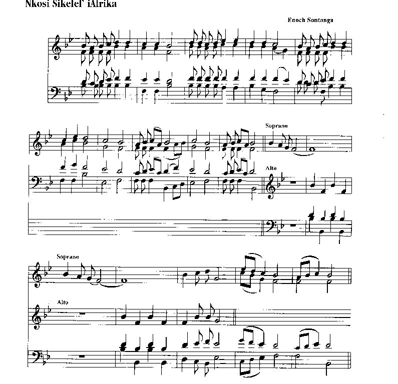

A hymn recorded by the man who wrote the indictment
- who
- Sol T. Plaatje, with Sylvia Colenso (piano)
- what
- “Nkosi Sikelel' iAfrika”, Zonophone 4168
- when
- 1923
- where
- London, UK / South Africa

In 1916 Sol Plaatje published Native Life in South Africa, a book-length charge sheet against the Natives' Land Act. On 16 October 1923, in London, he walked into Zonophone's studio and recorded six sides, with Sylvia Colenso at the piano.
One of them, without fanfare on the label, was Enoch Sontonga's "Nkosi Sikelel' iAfrika", the first recording of the hymn that became an anthem of liberation. It runs barely a minute. A prayer asking for Africa to be blessed, cut in the capital of the empire that had just shut the door on his delegation.